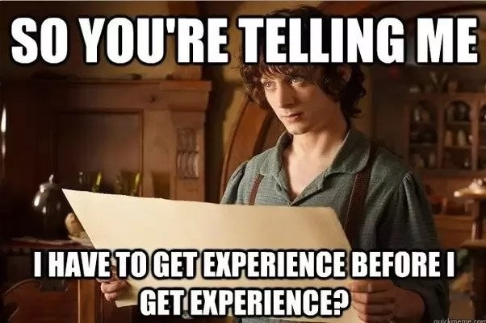
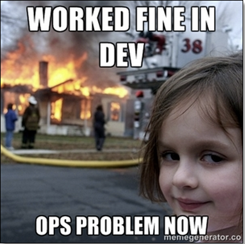

My 6 months Internship finally came to a conclusion here at Browserstack amidst the Covid crisis. Now, its time for some retrospection. Looking back at my experiences, here's an attempt to coagulate my views, learnings, and thoughts in the form of this writeup.

My internship started on 6th January, 2020 at Mumbai. Browserstack, surely knows how make someone comfortable in a city like Mumbai - by providing 2 weeks stay by the Arabian sea at a Lavish hotel. We were a total of 6 interns from different colleges - together we form the Browserstack Interns of class 2020.
Before diving more into this writeup, I think a basic introduction about the company is necessary. One part of the process of software development is testing. Developers build websites, mobile apps, and write tests for their code. Browserstack provides actual real devices to test their code on. Say, if I write tests for my android application, naturally Browserstack, is the platform I would test my app on.
We started off with our onboarding. We were all assigned a buddy who would help through the onboarding process. It was a different experience altogether. Following was the process:
A quick aside. As a new joiner in any software firm, the initial days according to me are most challenging. We hear so many different company-specific jargons, that we tend to mix up the concepts and prepare a complex web of self-made concepts. Following this process, gradually increments one’s knowledge about the system and prepares for the actual problems we would be facing as developers.
Despite the fact that Browserstack has a monolithic architecture based on rails, there is fairly a wide variety of technical diversity that spans across low-level bash to high-level Rails code. The App Automate Team has an additional dimension to work on i.e. iOS and Android Mobile devices, iOS being the most tricky of all because of a controlled ecosystem. The main components I worked on are 1. Rails Backend 2. Platform machines which houses innumerable iOS/Android mobile devices.
After joining the team, I had various sessions with my team members where I was explained the whole architecture and design of App Automate product. Side by side were some onboarding tasks that got me up to speed with the process of development, testing, and deployment at Browserstack.
I understood various phases of software development in action. Product Team comes up with a set of features/tasks to work on. The Engineering team picks up those items and pulls them in our biweekly sprint. I got to see the principles of agile being adopted in our team. The code that we write had to go through extensive testing and QA before being deployed on production. Finally, the deploys take place. Each day a fairly huge amount of code was being pushed to prod. Being a part of this whole cycle surely taught me a lot about software development. From being a boring subject at college to being a part of the day to day work, I believe the subject of software development has a lot to offer. As a developer, apart from coding one must also think about improving the process.
2 months into the project, I became comfortable with the code and process around them. Our team manages a product that is heavily dependent on event-driven code. This is because the real devices in DC are remotely connected to our infra through powerful private APIs. One of my major tasks was to revamp this API. With a new structure in hand, I had to understand the existing codebase and silently inject a newer API structure. This is when I realized “Bash is awesome”. I had never seen bash code so elegantly used in a production environment. I also realized the importance of optimization, caveats of different bash commands and concepts of threading and processes at the lower level.
The next stage of my work started with changes on main backend server. I had to work on our dashboard. The results of the tests executed on the real devices were being rendered to the user via the App Automate dashboard. As a new feature addition, this dashboard now supported realtime events. To make our dashboard compatible with the new API structure, I had to understand the whole flow which seemed a daunting task, had it not been one of the senior developers to make me understand the whole flow. I literally poked him countless times, and each time I received a response filled with explanation and patience. In fact, this applies to the whole App Automate team, where everyone was approachable, kind, patient, and super awesome.
Being a naive developer in the team, I used to make a lot of silly mistakes. I had only one thing in mind - development, writing code. Working on a user-facing component like dashboard revealed hidden doors full of bugs and unthinkable possibilities.

During the testing phase, there were many bugs, I came to realize, how a small change can affect some completely untouched part of code. The effort QA engineers put into testing is unparalleled. Better write proper code from the start itself.
One fine day, I and one other new joinee had a “First Hello” meeting with our skip-level manager. He said - “If you feel everything is going right, then something is wrong”. I literally did a somersault in my head, on hearing this. It was like a eureka moment. During my third year at college, I picked up a humongous project to work on. Although I was able to finish it after a few debacles of my own. I later devised the same philosophy for myself: “If you feel everything is going right, then there is something very wrong happening in background”. This alignment of thoughts enabled me to rise above my own suspicions and deliver my best.
I focussed on the tasks at hand and came up with checklists of my own. Some of them are:
After spending a huge amount of time on the API tasks, finally, it was deployed to production. The amount of effort my manager and developers put in on the intern to complete this task was extraordinary. Though I had regrets of my own:
4 months into the internship. I got comfortable with the team, the tasks, processes, and design. Our team had grown with some awesome developers and I was still in awe with the work we did. A satisfaction of sorts. Each problem we solved was unique. Our design was heavily dependent on Android and iOS. We had to come up with solutions and workarounds for the features, customers need. Here comes the ops cycle.
I was a part of 1.5 ops cycle, where I had the opportunity to work on issues faced by customers. The problems were unique, with no straight forward solutions and open-ended which required extensive research on our end. As my team member rightly said: “Ops is punishing as well as equally rewarding at the same time.” The satisfaction that we get, when we solve an already existing problem is great.
Towards the end of the internship, I worked extensively in solving production bugs and refactoring rspecs. We write unit tests(rspecs) for the code we write. I had the opportunity to refactor these rsepcs and remove db dependency which helps in removing flaky rspecs. Each function we write has its own logic flow. I learned how to write good rspecs which tests the main logic flow. Along the way it also taught me some caveats of its own.
With this internship finally coming to an end, I could not help but think myself as an aspiring software developer who has so much to learn. For me, Software Engineering has evolved from a subject to practice. We, developers, practice software development. Some prefer Monolithic, some microservices, some work on the frontend, some on the backend, some prefer Java, some prefer python and many such flavors of this amazing branch of computer science.
At last, I would like to thank each and every one of the Team Members of App Automate Team for making this an enriching experience.